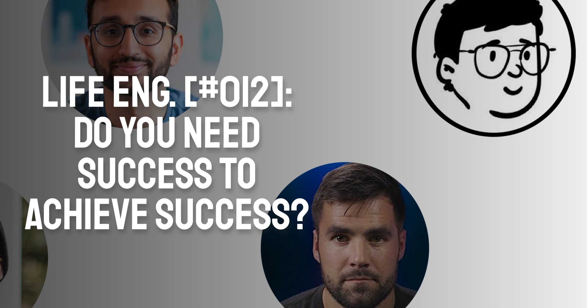

Do you need Success to achieve Success? 🏆️
Do we need success to achieve success?
This is what I was asking myself after scrolling Twitter for a while. I’m sure many of you can imagine the situation I was in.
As a content creator and a person who wants to sound smart online, I want to have an attractive Twitter profile. This means one of two things - I should either provide some sort of value or provide some sort of entertainment.
Although, you could argue, entertainment is its own sort of value.
And since I don’t find myself particularly funny, and I spend more time building Notion templates and doing web design than much else, I had to go with the former - provide value.
Luckily, this is also what the experts recommend - Gary Vee and Justin Welsh would both agree with me on the fact that you should first provide value, and then expect something in return, either a follow or a sale.
I tried to take inspiration from some of my favourite online creators, people who I believe actually bring value with their work:
- Thomas Frank
- Easlo
- Ali Abdaal
- Matt D’Avella
- Justin Welsh
- Red Gregory
And I noticed not one, but a few common threads (not the Twitter type of threads 🧵).
-
They all built things that inspired people
- Ali Abdaal showed students how to study effectively, using himself as example
- Easlo built numerous minimalistic Notion templates that sold hundreds of times
- Justin Welsh sold his course of writing mastery to thousands of people
-
They achieved success using their own products
- Ali was a top student at Cambridge
- Easlo manages his life with Notion
- Justin became one of the most influential writers on Twitter and LinkedIn
And this made me once again question myself. These people can now educate others on all the success they have amassed, and people will gladly follow them and buy from them, since they are inspired. Then how can I, who haven’t yet achieved a conventional level of success (still a student trying to pay bills on time and stay on top of things), achieve a similar level of success?
In this article, I will go over some of the ways in which already-successful people hold an advantage against most of us - and then we’ll go into how we can still become successful in spite of that. Here’s a TLDR for those of you without the virtue of patience right now:
- Success attracts more success when used as leverage
- Beginners can’t utilise that, so they naturally never start
- The solution = success is malleable, and can be redefined to suit you
The Flywheel Effect
The flywheel effect is often associated with business ventures.
It boils down to this - achievements breed more achievements. A continuous flow of positive emotions and ticked boxes on your to-do list will make it much more likely for more success to follow.
Take for example Thomas Frank, whose creative journey I explored in this article.
Thomas had a following from his days as a beginner YouTuber, that has scaled immensely ever since. His current following makes it easy for him to pursue other niches - he will surely have a portion of his audience that will buy almost anything from him. It would be much more difficult for somebody with no social validation under their belt to venture out into a random topic and achieve success.
This logic fits well with chapter 1 of Jordan Peterson’s book, “12 Rules for Life”. He advises young people to fake an appearance of confidence, even if they do not feel it’s genuine. This is because the opposite of confidence is self-doubt, and this default state of self-doubt does more harm than a default state of self-confidence.
So this must mean that success does lead to more success? I’d say so, definitely.
And yet, luckily for us…
Lack of experience ≠ Excuse for not starting
It would be perfect if you got a default audience of 100k followers on Twitter when you signed up. Any of your tweets would be discussed, people would talk with you and give you ideas on what to write about, you would be a rock-star.
And yet, how are you different from any other person on the web?
Just like any other currency, social currency (likes, retweets, follows) mean something when they are scarce. If it was that easy to become a social media superstar, it wouldn’t mean anything. And still, like any other currency, it is perfectly achievable to accumulate more of it even if you start at 0.
All of the people I listed above started with 0 followers at one point. Their first 10 subscribers were probably their friends and family, and they are ever-evolving creators, who will grow more and more. What we see, however, is a static image - a person with X amount of followers, making Y$/month, having Z amount of passive income streams.
A lack of experience is definitely discouraging, but guess what the inspirational bit is? Everybody started out with 0 experience at some point, they just managed to accumulate it at some point, either fast or slow, early or late. And now you observe the static image of their success as if it appeared overnight.
This is all very optimistic and all, but so what? How can I make people follow me if I have nothing to stand for it? - you probably ask
And that’s the best question after all, this is what I was wondering in the beginning as well. The solution seems simple, but it took me an episode of Game of Thrones to realise it.
It happened when Tyrion, a dwarf with many enemies in the city and a lot of responsibilities, talked with Varys, Master of Whisperers. The quote went as follows:
“Here, then. Power resides where men believe it resides. No more and no less.”
“So power is a mummer’s trick?”
“A shadow on the wall,” Varys murmured, “yet shadows can kill. And ofttimes a very small man can cast a very large shadow.”
“Shadow” in our case, is equal to success.
The shadow of success can be cast by any person in the world, even you. You are not in control of the flames which cast light (those are the life events outside of your control, metaphorically speaking), but you are in control of yourself. You can reposition yourself, move, twist, and the shadow you cast will grow bigger or smaller.
Enough with the metaphors, let’s give 2 examples to make it easier to understand.
- Imagine you are conventionally rich, self-made, and happy. However, if you can’t market yourself well, you may end up being seen as boring, overly-confident, or undeserving of your wealth. Such fate often occurs to famous people with poor PR.
- Now imagine the opposite. You are still poor, struggling, and unhappy. But if you market yourself as striving, hard-working, and clever, people will see it as an underdog story. A story about a soon-to-be winner. And you’ll win the attention of people who wish to see you succeed.
I hope this article (which turned into a philosophical essay half-way through) made you realise something - success is largely subjective, and like the shadow on the wall, it can be modified to suit your needs.
Now, if you’re already ready with your new Twitter bio, go and write it up.
I know I will.